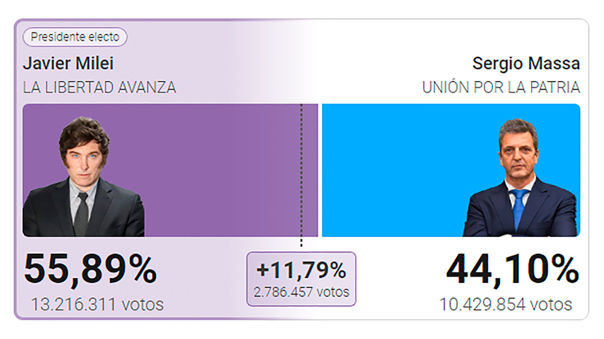

GANÓ LAS ELECCIONES CON UN 55,89% DE LOS VOTOS
¡Batacazo historico para el partido Liberal!. Javier Milei es el primer postulante para presidente del partido Liberal en ganar las elecciones siendo esta su primera postulación. Hemos sido testigos de un hecho que quedará para la historia de la politica argentina, muchos lo llamaron "voto de bronca" debido a una suposición del pensamiento en común de la mayoría de los que votaron a Milei el cual es la íra contra el partido contrario y la necesidad de un cambio que pueda salvar al pais.
Pese a los presuntos intentos de fraude de parte de diversos fiscales de mesa no han podido contra la oposición, varios videos se viralizaron con rapides en redes sociales donde se puede ver como es que supuestos fiscales de mesa y gente común rompen boletas de Milei. Fué rapido el rechazo de las personas que visualizaban dichos videos, los comentarios acerca de lo visto no eran del todo agradables.